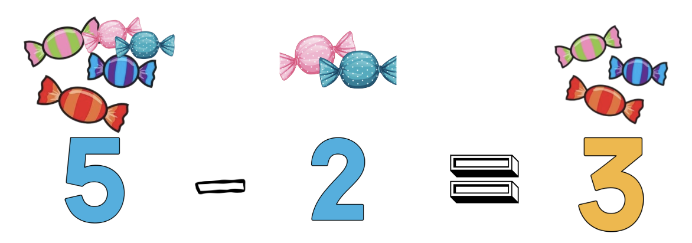
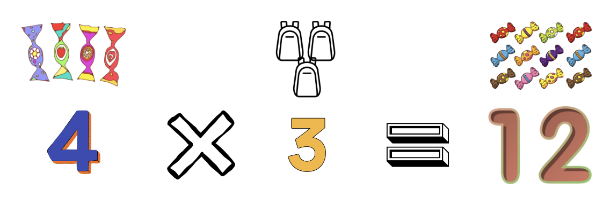
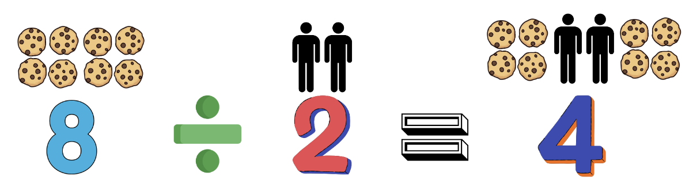
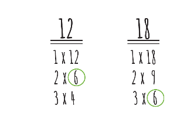
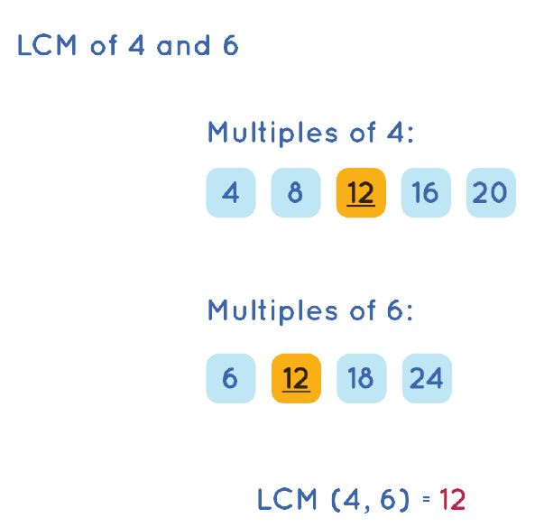
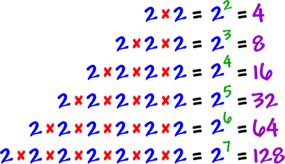

Mathematics is like a set of tools we use to understand and solve different kinds
of problems. It's a language that helps us describe and figure things out. Imagine you have a bunch of things,
like toys or fruits, and you want to organize them or share them equally with friends.
That's where basic math, like counting and dividing, comes in handy.
As time went on, people started using math to answer more complex questions.
For example, how planets move in the sky or how to build really strong structures like bridges.
The ancient Greeks and others played a big role in figuring out the rules for shapes and numbers.
Jump ahead to more recent times, and you've got famous mathematicians like Newton and Leibniz.
They gave us powerful tools like calculus, which helps us understand things like
how objects move or change.
But math isn't just about numbers. It's a way of thinking and solving problems. In today's world, math is
everywhere, from computer science to figuring out the best deals at the store. It's like a super
useful set of tools that helps us make sense of the world.
Addition is like putting things together
Imagine you have apples.
If you have 2 apples and someone gives you 3 more,
how many apples do you have now?
You add them together. So, 2 apples + 3 apples equals 5 apples.
In math, we use the plus sign (+) to show addition. So, 2 + 3 = 5.
It's like combining groups to find out the total. Easy, right? That's addition!
If you want to know how to add big numbers, you can watch this video
as he will you show all the steps:
Subtraction is like taking things away.
Imagine you have 5 candies, and you eat 2 of them.
How many candies do you have left? You subtract the ones you ate.
So, 5 candies - 2 candies equals 3 candies.
In math, we use the minus sign (-) to show subtraction. Therefore, 5 - 2 = 3.
Subtraction is like figuring out what's left after you've taken away some. That's it – subtraction made easy!

If you want to know how to subtract multi-digit, you can watch this video to further your learning.
Multiplication is like fast addition.
Imagine you have 3 bags, and each bag has 4 candies.
To find out how many candies you have in total, you can add the candies in each bag.
So, 4 candies (in one bag) + 4 candies (in another bag) + 4 candies (in the last bag)
equals 12 candies.
In multiplication, instead of adding repeatedly, we use a symbol: × (times). So, 3 bags × 4 candies in each bag equals 12 candies.
In math, it looks like this: 3 × 4 = 12.
Multiplication is just a quick way of adding the same number several times. Easy, right? That's multiplication!

You can also watch this video if you want to know more about muti-digits multiplication
Division is like sharing or grouping.
Imagine you have 8 cookies, and you want to share them equally
with 2 friends. How many cookies does each friend get?
You divide the cookies equally.
So, 8 cookies ÷ 2 friends equals 4 cookies for each friend.
In math, we use the ÷ symbol to show division. Therefore, 8 ÷ 2 = 4.
Division is about figuring out how many times one number fits into another or
how things can be grouped equally. That's the basic idea of division –
making things fair and sharing equally!

If you want to know the long division method, you can watch this video
The GCF is like finding the biggest "share" number.
Imagine you have two numbers, say 12 and 18. Now, think about all
the numbers that can divide evenly into both 12 and 18. The Greatest
Common Factor is like finding the biggest number that can evenly
divide both of them.
For 12 and 18, the numbers 1, 2, 3, and 6 can divide evenly into both.
But the biggest one is 6. So, the GCF of 12 and 18 is 6.
In math, we use GCF to find the largest number
that divides evenly into two or more numbers. It's like finding the biggest
share they have in common. That's the Greatest Common Factor!

This video will show you two different ways of getting Greatest Common Factor
The LCM is like finding the next "meeting point."
Imagine you have two numbers, say 4 and 6.
Now, think about the multiples of each number.
The LCM is like finding the smallest number that both 4 and 6 can "meet" at.
For 4, the multiples are 4, 8, 12, 16, 20, ...
For 6, the multiples are 6, 12, 18, 24, ...
The smallest number they both meet at is 12. So, the LCM of 4 and 6 is 12.
In math, we use LCM to find the smallest number that is
a multiple of two or more numbers. It's like finding their
next common meeting point. That's the Least Common Multiple!

This video will show you the easy way of getting LCM using prime factorization
Exponents are like super shortcuts for multiplying.
Imagine you have a number, let's say 2, and you want to multiply it by itself several times.
Instead of writing 2 × 2 × 2, you can use an exponent.
If you write 2³, it means 2 multiplied by itself three times (2 × 2 × 2). So, 2³ equals 8.
In general, when you see a number with a little one raised to its right, like 2³, the small
number is the exponent, and it tells you how many times to multiply the base number (here, 2).
So, 2³ is a quick way of saying "2 multiplied by itself three times." Exponents are just super shortcuts for multiplying!

Watch this video as this will guide you more understanding of Exponents
Radicals are like finding the secret root.
Imagine you have a number, let's say 9. If you want to find the square root of 9, you're essentially asking,
"What number, when multiplied by itself, gives me 9?" The answer is 3 because 3 × 3 = 9.
In math, we use the radical symbol (√) to represent the square root. So, √9 = 3.
Now, if you see something like √16, it's asking, "What number, when multiplied by itself,
gives me 16?" The answer is 4 because 4 × 4 = 16.
Radicals are a way of finding the "secret root" or the number that, when multiplied by itself, gives
you the original number. That's the essence of radicals!
This video will show you how radical is done and its complexities:
Learning Objectives:
A. What is a function?
B. Evaluating a function
C. Who uses functions and what are they used for?
A. What is a Function?
● A function is a rule that assigns to each object in a set A exactly one object in a set B. The set A is called the domain of the function, and the set of assigned objects in B is called the range.
● A function is denoted as f(x) and read as "f of x" not "f multiplied by x".
B. Evaluating a function
1. What is the domain of the function f(2) = x + 5:
Answer: 2. The domain of the function is equal to the value of x and is also the input to the function.
2. Evaluate the function f(2) = x + 5:
Answer: 7. To find the value of a function, we have to identify the domain and then process the input value by substituting the variable x in the process.
C. Who uses functions and what are they used for?
● Computer engineers use functions to design computer systems.
● Programmers use functions to implement their code.
● Business managers use functions to compute for the price of a product.
● Economists use functions to study the population.
You can also watch this video if you want to know more about functions